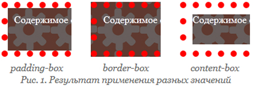

определяет область, до которой будет растягиваться
фоновый цвет или изображение элемента, фактически
«обрезая» его по границам блока
(border, padding или content)
padding-box — Фон отображается внутри границ.
border-box — Фон выводится под границами.
content-box — Фон отображается только внутри контента.
Значений может быть несколько
(для каждого из множественных фоновых рисунков),
при этом значения разделяются между собой запятой.
Результат использования значений свойства
background-clip для элемента с пунктирной рамкой
толщиной 10 пикселов

Примеры:
<!DOCTYPE html>
<html>
<head>
<meta charset="utf-8">
<title>background-clip</title>
<style>
.example {
background:
#f5392f
url(images/gear.png);
border:
10px dotted red;
background:
#f5392f;
padding:
10px;
color:
#fff;
min-height:
48px;
}
</style>
</head>
<body>
<div class="example">
Содержимое страницы
</div>
</body>
</html>
Синтаксис:
background-clip:
[padding-box | border-box | content-box]
[, [padding-box | border-box | content-box]]